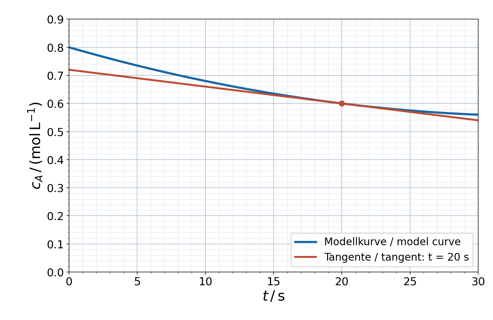
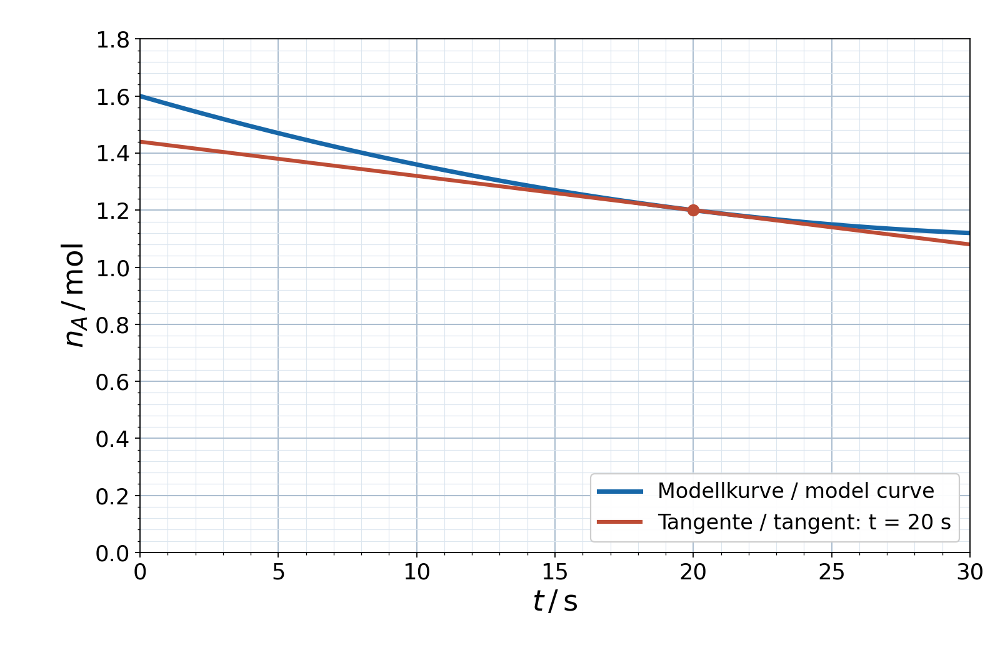
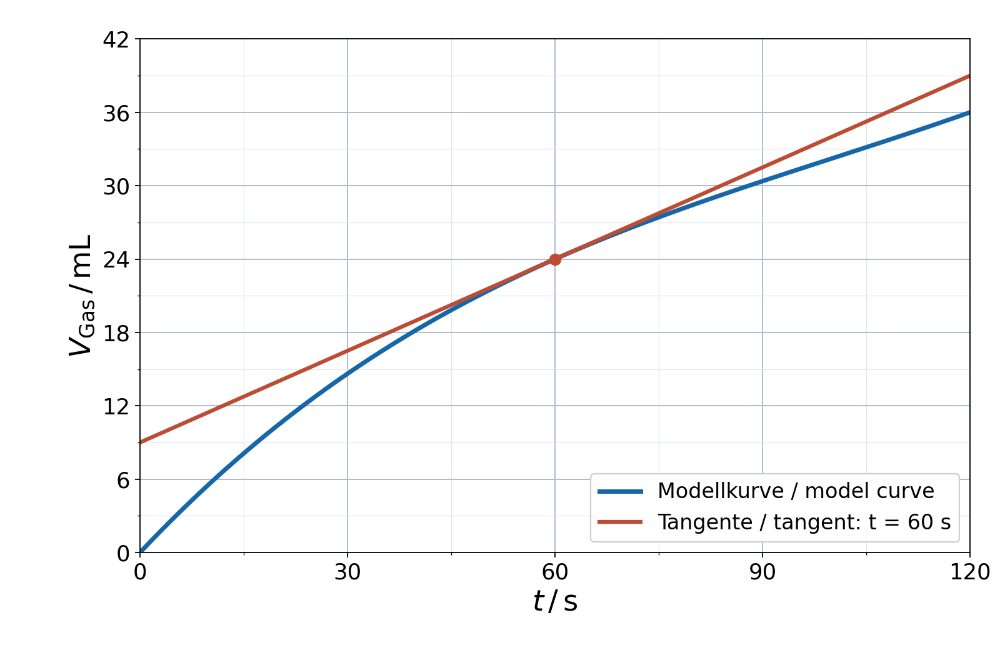
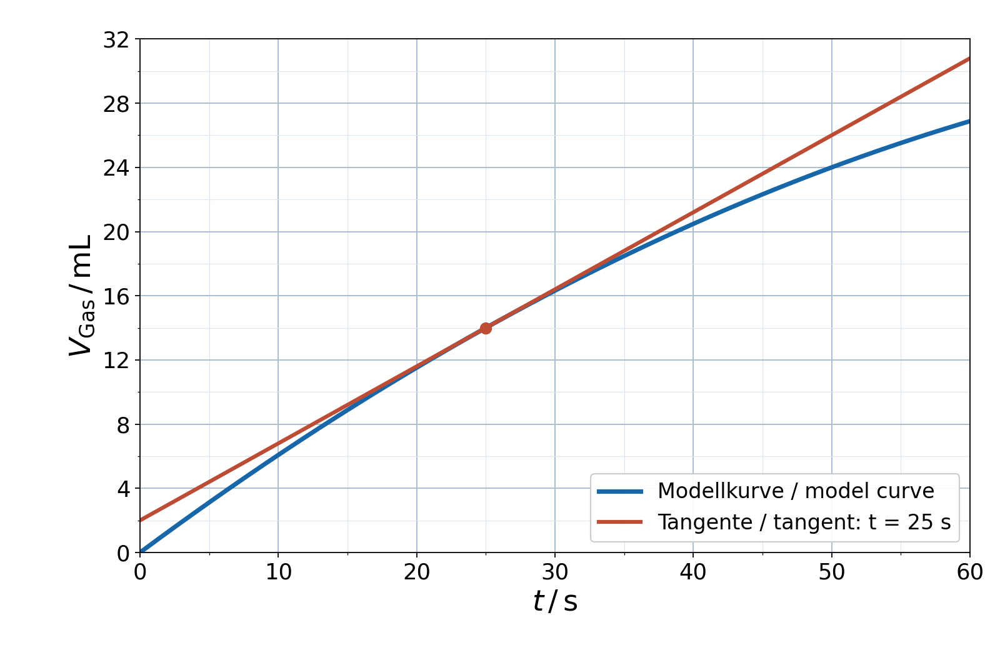

Skalierte Diagrammaufgaben Chemieq3-18-a – Hauptfall / main case

Deutsch: Synthetischer Verlauf für 2A→B in konstantem 1,00 L. Das vollständig skalierte Konzentrations-Zeit-Diagramm q3-18-a.png zeigt die Kurve und die Tangente bei 20 s. Stoffmenge nA=cA·V. Die Tangentensteigung ist nicht angegeben; sie muss aus dem Diagramm bestimmt werden. Bestimme mittlere und momentane A-Verbrauchsgeschwindigkeit,Reaktionsgeschwindigkeit und B-Bildungsgeschwindigkeit sowie Stoffmengenrate. Erkläre Sekante,Tangente,Vorzeichen und Einheiten. Lies die Kurvenwerte bei 0 und 20 s sowie zwei ausreichend weit getrennte Punkte der eingezeichneten Tangente ab. Zeige das Steigungsdreieck mit Δc und Δt; lies nicht nur einen Tabellenwert ab.
English: Synthetic curve for 2A→B at constant 1.00 L. The fully scaled concentration-time graph q3-18-a.png shows the curve and the tangent at 20 s. Amount nA=cA·V. No tangent slope is supplied; it must be determined from the graph. Determine average and instantaneousA disappearance rate,reaction rate andB formation rate as well as amount rate. Explain secant,tangent,signs and units. Read curve values at 0 and 20 s and two sufficiently separated points of the plotted tangent. Show the slope triangle with Δc and Δt; do not merely copy a table value.
q3-18-a – frische Variation / fresh variation

Deutsch: Frisch: q3-18-a-fresh.png zeigt statt der Konzentration die Stoffmenge nA im Volumen 2,00 L. Bestimme die momentane Stoffmengen-Verbrauchsrate bei 20 s aus der eingezeichneten Tangente und vergleiche die daraus berechnete Konzentrationsrate mit dem Hauptfall. Keine Steigung ist vorgegeben.
English: Fresh: q3-18-a-fresh.png plots amount nA instead of concentration at volume 2.00 L. Determine instantaneous amount disappearance at 20 s from the tangent and compare the resulting concentration rate with the main case. No slope is supplied.
q3-18-b – Hauptfall / main case

Deutsch: Synthetisch gesammeltes Produktgas bei konstantem T,p. Das vollständig skalierte Zeit-Volumen-Diagramm q3-18-b.png zeigt die Kurve und die Tangente bei 60 s. Gegeben sind molares Gasvolumen 24,0 L/mol und konstantes Lösungsvolumen 0,500 L; 1 mol Gas entspricht 1 mol Reaktionsumsatz. Kurvenwerte und Tangentensteigung werden aus dem Diagramm abgelesen, nicht als Zahlen geliefert. Bestimme mittlere Raten für0–60s und60–120s sowie momentane Rate aus der Tangente,in Volumen,Stoffmenge und bezogen auf Lösungsvolumen. Erkläre Aussage und Voraussetzungen. Lies Kurvenwerte bei 0,60,120 s und zwei weit getrennte Tangentenpunkte ab; dokumentiere ΔV/Δt mit Steigungsdreieck.
English: Synthetic collected product gas at constant T,p. The fully scaled time-volume graph q3-18-b.png shows the curve and tangent at 60 s. Supplied molar gas volume is 24.0 L/mol and constant solution volume 0.500 L; 1 mol gas equals 1 mol reaction conversion. Curve values and tangent slope must be read from the graph, rather than supplied numerically. Determine average rates for0–60s and60–120s and instantaneous tangent rate,in volume,amount and per solution volume. Explain meaning and assumptions. Read curve values at 0,60,120 s and two separated tangent points; document ΔV/Δt with a slope triangle.
q3-18-b – frische Variation / fresh variation

Deutsch: Frisch: Bestimme aus q3-18-b-fresh.png die Tangentenrate bei 25 s. Molares Gasvolumen weiterhin 24,0 L/mol, Lösungsvolumen jetzt 1,00 L. Bestimme Stoffmengenrate und auf Lösungsvolumen bezogene Rate; keine Tangentensteigung wird angegeben.
English: Fresh: determine tangent rate at 25 s from q3-18-b-fresh.png. Molar gas volume remains 24.0 L/mol; solution volume is now 1.00 L. Determine amount rate and solution-volume-normalized rate; no tangent slope is supplied.